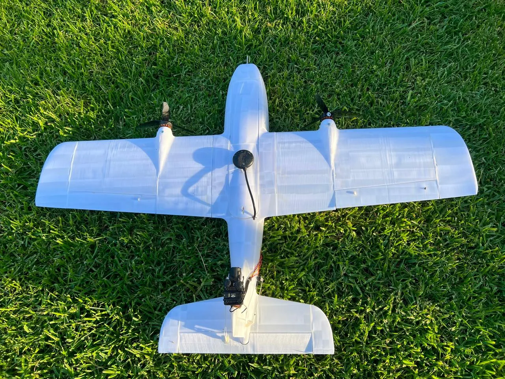

Air / UAV & UAS
Fixed-wing UAV configurations and mission development
Fixed-wing aircraft development across V-tail, pusher and twin-motor conventional-tail configurations, connecting airframe design with autonomous missions.
Mission and interface integration
Tornado V2 twin-pusher fixed-wing aircraft, with two propulsion motors and a conventional tail.
My contribution
Built and integrated multiple fixed-wing configurations, connecting airframe fabrication, propulsion and avionics with simulation, flight tests and autonomous mission setup. The Tornado V2 examples use the Titan Dynamics airframe design: I printed and assembled the structures, integrated Pixhawk 6C avionics and twin-pusher propulsion, and worked on configuration, control-surface checks and log review. Other work includes V-tail, pusher and twin-motor conventional-tail layouts, differential thrust, Gazebo/SITL checks and FPV interfaces.
Delivered work
Integrated aircraft configurations, simulation workflows, autonomous mission setup and field-test support.
Scope and validation
Project photographs document printing, assembly and avionics integration of Titan Dynamics Tornado V2 airframes. The flight-review visual is an AI-assisted, location-redacted illustration with the map and timestamps removed.
Fabrication & aircraft integration
Printed and assembled Titan Dynamics Tornado V2 airframes, integrating the twin-pusher propulsion, Pixhawk 6C, navigation and onboard wiring. The photographs below follow fabrication, assembly and avionics preparation.
- Airframe
- Titan Dynamics Tornado V2
- Material
- ABS
- Infill
- 3%
- Walls
- 1 perimeter
- Configuration
- Twin-pusher fixed-wing
- Autopilot
- Pixhawk 6C / ArduPlane 4.6.3
ABS printing with 3% infill and one perimeter, selected to keep the airframe light while retaining practical rigidity for assembly and handling.